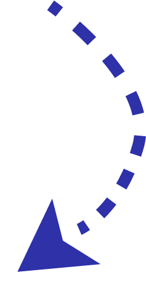
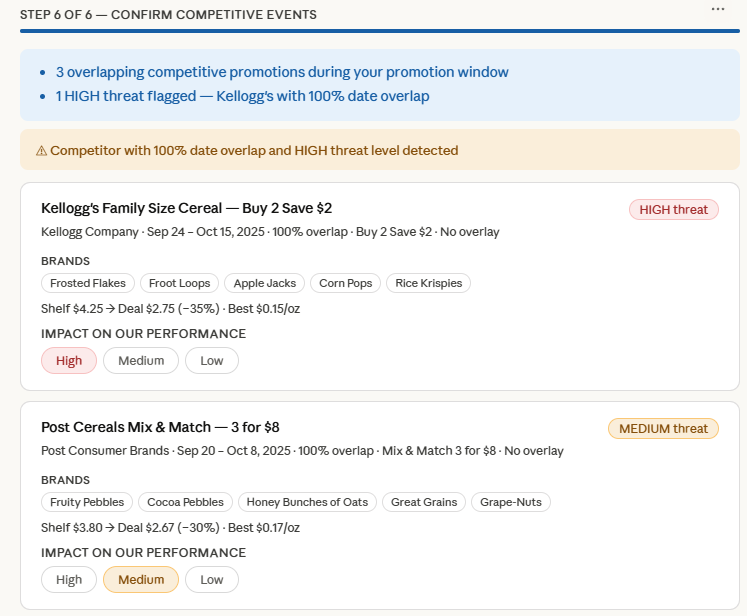
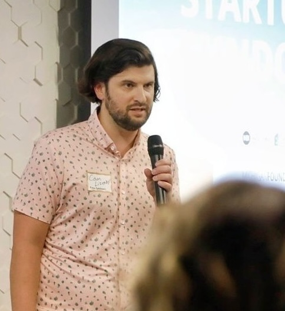

Alakai is the commercial source of truth for FMCG manufacturers: what is happening in the market, what to change next, and whether your actions worked. Start with one account and one open decision in a bounded 90-Day Trade Performance Action Cycle.
Retail sales, shelf execution, TPM plans, and manufacturer economics live in systems that were never built to agree. What actually happened in the aisle sits outside all of them.

Every team's numbers are valid in the system they use. Reconciling them by hand, event by event, is where time goes and where the decision window closes.
The business learns too late on two clocks. Both are running whether or not anyone is watching them.
AOP, quarterly reviews, and promotion change windows arrive on schedule. Once buyer conversations, TPM, demand, and supply plans align, even a known risk becomes hard to change.
A competitor changes price, pack, or assortment at one account. By the time the share shift shows up in traditional reporting, the response still has to be aligned and sold in.
The value is not faster analysis. It is earlier action, before the next window closes.
Alakai's difference is the closed loop from observed market truth to expert action and measured outcome, not feature breadth.
Combine observed shelf price, promotions, coupon stacking, assortment, availability, and competitive signals with your plans and economics.
Compute commercial facts deterministically and reproducibly. Surface the risks, opportunities, and plan changes that deserve expert attention.
Deliver provenance-cited priorities in the working language of account, RGM, analytics, finance, and leadership teams, inside the decision workflow.
Snapshot the original plan and the approved change, then actualize execution and realized outcomes later.
During the first cycle, the Alakai team works directly with your account and revenue leaders. Action packs and supporting data arrive before every user account and integration is live.
Incremental gross sales, trade investment, incremental net sales, gross margin, and value per trade dollar, compared to the account's own benchmark, with a plain-language takeaway your account team can carry into the buyer meeting.

Observed competitive promotions and material shelf-price or price-pack changes at the selected account, with a before-and-after view of how relative shopper value moved. Detection and relative value change, so leaders know when to investigate and respond.

A promotion can look successful right up until shelf mechanics and manufacturer economics meet.
Highest retail unit lift in its set. But the depth overspent trade, cannibalized base volume, and produced less incremental value than a lighter offer in the same account.
Shelf price, promotion mechanics, coupon stacking, eligible products, and what actually executed at store level.
Deterministic trade, incremental net sales, gross margin, cannibalization, and product-mix effects, reproducible from approved inputs.
Remove high-cost, low-lift PPGs, avoid stacking, or choose a better tactic or week. Your experts approve, modify, or reject.
Evaluate the full profit pool before repeating the event.
Turn promotion evidence into approved plan changes before the decision window closes. For one selected account, Alakai turns in-scope promotions and the forward plan into fact-based priorities and a measurement-ready record.
Confirm the active decision window and in-scope promotions. Connect approved inputs. Snapshot the forward plan and compute the first decision-ready facts.
Compare event economics, identify stop, change, and accelerate opportunities, quantify supported annualized opportunity, and flag material competitive price-pack changes within covered scope.
Review priorities with account and RGM leadership. Capture approved additions, removals, or modifications. Deliver the action pack, data, and measurement baseline.
Deterministic analysis of agreed in-scope promotions and relevant planned promotions up to six months forward.
Supported recommendations to stop, change, or accelerate future promotions. No action is implemented without your approval.
A flag for material shelf-price or price-pack changes in the selected account, showing how relative shopper value changed where observed coverage supports it.
Provenance-cited action pack and supporting data, plus a snapshot of approved plan changes for future actualization.
*Working starting point for one account. Final fee varies with customer scale, scope, data readiness, and delivery effort. Annualized opportunity is not realized impact. Alakai controls analysis and delivery; customers control approval and implementation; the market controls realized results.
| Level | Who controls it | Evidence of success |
|---|---|---|
| Guarantee | Alakai | Facts computed; risks and opportunities identified; prioritized recommendations and provenance-cited outputs delivered. |
| Target | Your team | Recommendations reviewed; actions approved; future plans changed; trade reallocated or avoided. |
| Measure | Shared, plus the market | Approved events execute; net sales, gross margin, trade, share, and execution outcomes are actualized later. |
The initial cycle does not guarantee autonomous execution or financial results. It guarantees the fact base and priorities your experts need, and it establishes measurement from day one so the next cycle starts smarter.
Check what is true today. We use the same four gates in every scoping conversation.
Most teams have two or three in place already. The scoping call is where we name the missing one and decide whether the timing works.
Talk through your accountExperts review and approve every recommendation. Alakai can operate read-only while your team implements approved changes in the systems you already use.
Alakai computes commercial facts deterministically. AI helps experts investigate the evidence and create audience-ready outputs. Every recommendation retains provenance, and every action requires expert approval.
Let the intelligence lead attention. Let experts lead the business. Customer data is handled under agreed confidentiality, security, and data-processing terms. Read more on data security and trust.

Alakai was built by a former Kellogg's commercial leader who spent seven years watching enterprise CPG teams leave value on the table. The data existed. It was disconnected, delayed, and impossible to act on at scale.
Every part of the 90-day cycle traces back to a specific gap that real account teams, RGM managers, and sales analysts cannot close with the tools they have today.
You should keep those systems. Alakai does not replace the TPM or ERP. It connects planned events, observed shelf execution, and manufacturer economics so teams can see what should change while the decision is still actionable. The first cycle is bounded to one account and can operate read-only.
No, and we would be cautious of anyone who does. Alakai guarantees the work it controls: agreed analysis, reproducible facts, prioritized risks and recommendations, provenance, and committed deliverables. The cycle targets your approved plan changes and establishes measurement for realized outcomes. Retailer acceptance, execution, shopper response, and market results sit outside a responsible guarantee.
Data readiness is a gating condition, not a promise of perfect enterprise data. We start with one account and the minimum approved inputs, confirm coverage and business rules in the first phase, document exceptions, and adjust scope when needed. The 90-day schedule begins when the minimum data path is confirmed.
You are not buying AI as the category. The business value is earlier commercial evidence and clearer action. Alakai computes the facts deterministically; AI helps experts investigate the evidence and create audience-ready outputs. It does not invent the economics or approve the action.
The initial cycle operates read-only. Your experts approve the recommendation, communicate it to the retailer buyer, and update the retailer contract and internal TPM plan through existing workflows. Alakai snapshots the approved change so it can be measured later. Deeper write-back is not required to prove the first outcome.
Within covered scope, Alakai flags a material competitive shelf-price or price-pack change and shows how relative shopper value moved. That earlier signal helps leaders decide when to investigate and respond. A fully optimized response requires elasticity and scenario inputs that are not part of the initial commitment.
The entry offer is a bounded commercial action cycle, not generic software access. It analyzes live promotions and the forward plan, quantifies supported stop, change, and accelerate opportunities, and establishes the baseline to measure approved changes. Compare the fee to the revenue, trade, and margin the selected account exposes, and to the cost of repeating one weak event. The final fee depends on scale, data readiness, scope, and delivery effort.
Not to start. Alakai works collaboratively with revenue management, sales planning, analytics, and the account team, then delivers a provenance-cited action pack and supporting data. Direct access is activated as approvals mature. The first success event is a leadership-reviewed action, not a login count.
A 30-minute scoping conversation is enough to tell whether a 90-Day Trade Performance Action Cycle can inform your decision before the window closes. No platform tour. One account, one event, one future plan.
Pick a time that works. We will ask about the open decision, its deadline, and who owns the action and the budget.
Tell us the account and the decision window in a sentence and we will come back with the two or three questions that matter.
Ask for the Proposal and Statement of Work outline for the 90-Day Trade Performance Action Cycle and share it with your budget owner.